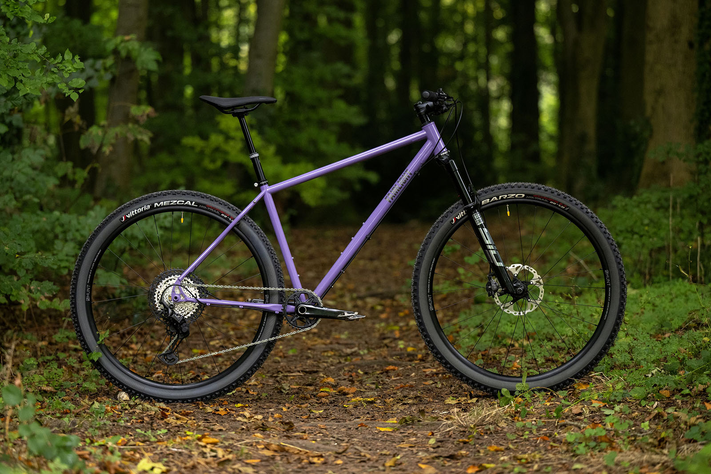

What I’ve Built

SuperStore Sales and Profit Analysis
📊 SuperStore Sales & Profit Analysis Explored U.S. SuperStore data using visualisation, clustering, and geospatial mapping to uncover sales trends and profit patterns, enabling strategic business decisions.
GitHub
Green Hell Predictor
🏎️ Green Hell Predictor A web app using AI to predict missing car specs and Nürburgring lap times with high accuracy. Provides deep performance insights based on technical parameters.
Live Demo | GitHub

Capital Bikeshare Data Analysis and Prediction
🚴 Analyzed Capital Bikeshare data to explore urban mobility, integrating spatial data with ward shapefiles. Used EDA and ML to predict daily rider counts and identify usage trends.